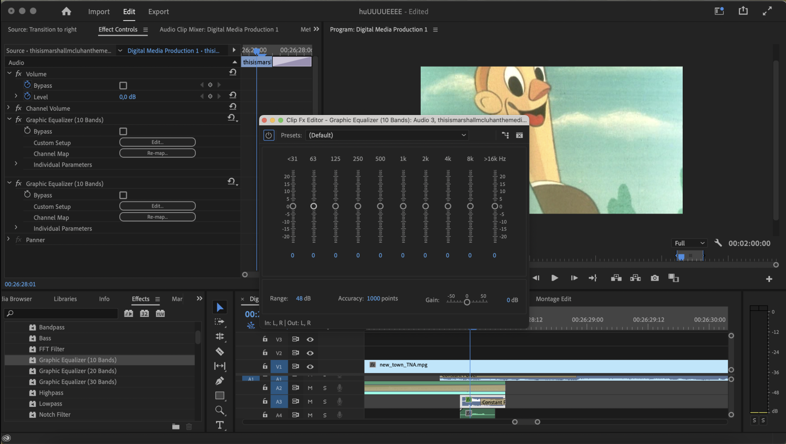
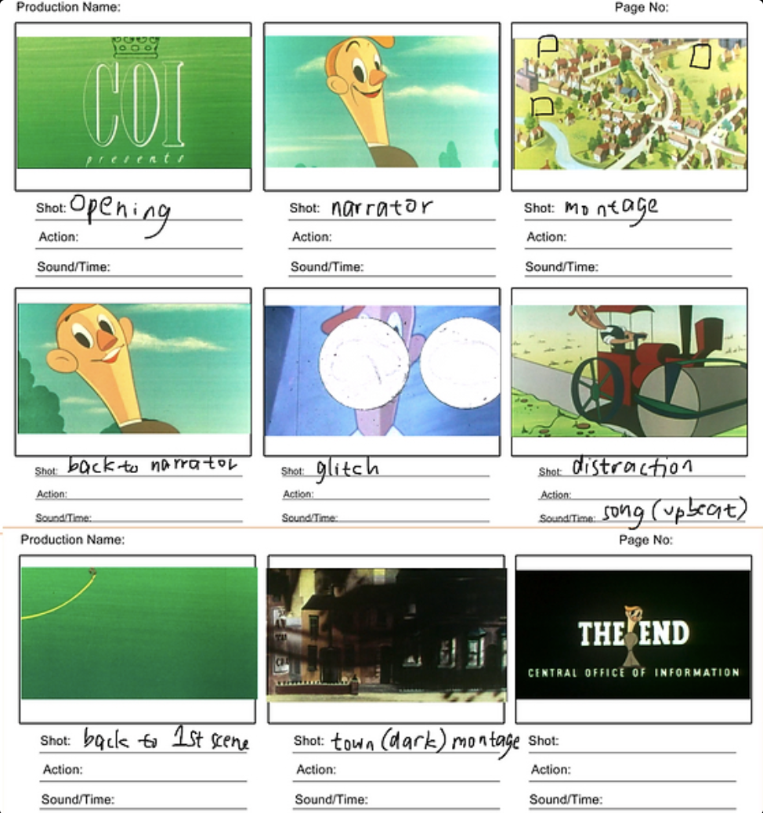
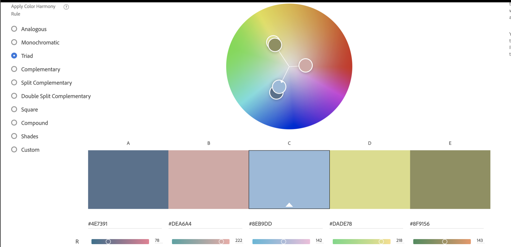
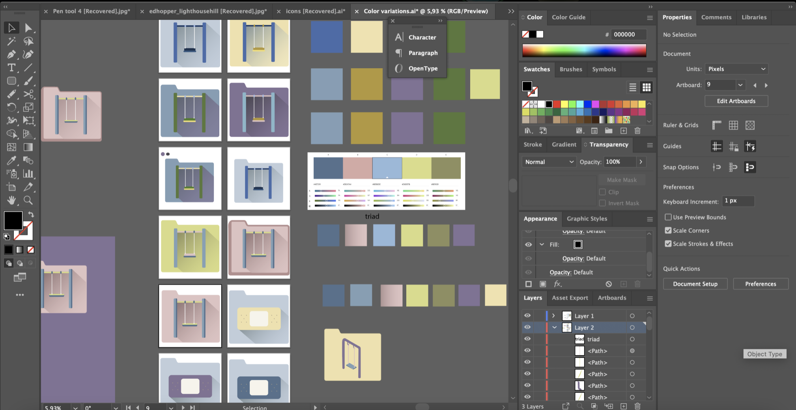
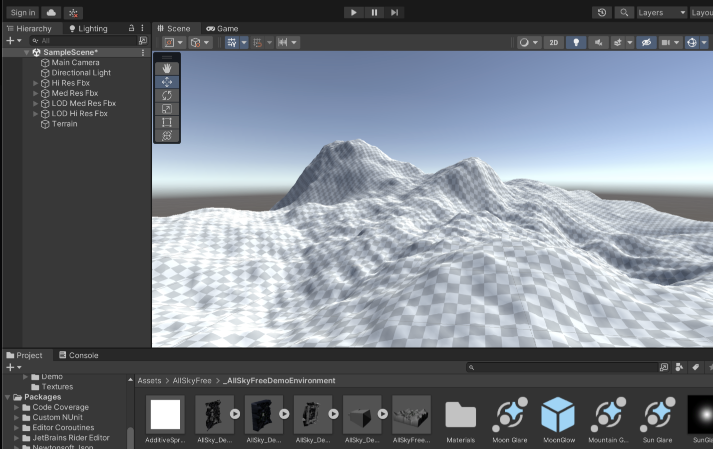

Hey there! I will pretend that you have not seen my name plastered on the whole website and
re-introduce myself. Hi! My name is Alicia or Alice for short! I am an 18-year-old student
studying
digital media design at RMIT. I have always had an interest in art and design since very
young.
Started from scribbling on my parent’s bedroom walls, tried sketching, painting, and now
experimenting on the digitals. I discovered various design platforms like Photoshop,
Illustrator,
Premiere, etc at the end of middle school and have been absolutely riveted by them since.
I tend to get heavily inspired by my own personal experiences mixed with different kinds of
art such
as movies and designs. I consider everything I have been through as tiny puzzle pieces that
creates
who I am and I constantly try to express that through my works. Thus, design has been an
outlet for
me to share my memories and relive my past experiences. Through design, I recognize more
about
myself and hopefully also help people discover more about themselves. In the future, I hope
to
exercise my design thinking and explore even more digital media design forms and techniques.
Alice's Digital Media Projects ⇾Alice's Digital Media Projects ⇾Alice's Digital Media Projects ⇾Alice's Digital Media Projects ⇾Alice's Digital Media Projects ⇾Alice's Digital Media Projects ⇾Alice's Digital Media Projects ⇾
Alice's Digital Media Projects
Video Remix

My first assignment was to make a video remix using video (visual) and audio
from
2 different sources. The goal was to create a completely different video with a different
storyline
by combining the 2 by only using cuts and simple transitions in Premiere Pro. My entire working
process for this assignment consists of 3 main steps. First, I decided on a main concept, then
experimented with the videos and editing tools, and lastly construct a more specific storyline
as I
edit and pick out details to complete the videos.
Concept
Upon watching the video I chose for my visuals, I immediately thought of a
propaganda-ish concept about a town that seems perfect on the outside but has its own dark
hidden
secrets. I chose this theme because I wanted to take a different approach from the original
storyline. The video I chose for the visual was called New Town and it was about a town getting
overpopulated that they have to expand and move to a new town. While watching the video, I
noticed
that it has hints of dark vibes here and there, so I wanted to exaggerate the dark vibes from
the
original video and create a more ominous concept. Then I created a storyboard to build the
concept
into amore detailed storyline.

Experimentation
The first thing I did to approach this project was to watch each video
sources
and choose 2 video that stood out to me. With those 2 videos, I started creating a concept and
watched the visual video source multiple times. I imported them to Premiere and started by
cutting
up each scene and making folders separated by the overall mood or genre(dialogue, landscapes,
actions, etc) of each scene.
I constructed the audio first and then scoured the folders to choose scenes that can work well
with
the audio. Just by experimenting, I saw that audio can really reshape a mood of a scene really
well
and change the whole meaning. So then I started experimenting by picking a few scenes from my
mood
folder and tried to make it into an opposite mood by just using fitting audios.
After experimentation, I chose a key scene in my whole video which was to have a glitch
transition
juxtaposing the different sides of the town. So I constructed the glitch transition first by
cutting
up my video and audio into really short keyframes. Then, I compile them in a random order and
layered my audio.
Finalization
I constructed the rest of the video based on the glitch scene. I mostly fixed
the sound as it was a big part that can keep audiences’ attention. I lowered parts of the audio
that sound unpleasantly loud and added some underlying background noises to set the mood even
more.
Icon and Web Html
For assignment 2, we were asked to create a website containing 9 icons that
emits a relating sound when clicked. We were also given a few theme options.
The main theme that I chose was “memory”, specifically childhood memories. At first, I had
considered three different themes, which are "growth", "memory", and "dream". I also was very
interested in jamais fu, which refers to a memory of something familiar but feels foreign to
you. But after much consideration, I chose to talk about childhood memories as it was a special
period for me, are easier to translate into simple icons, and often has a vibrant and fun color
scheme which I favor in general.
I did not know what colours to use when I initially made the thumbnail sketches. Following the
first three vector icon designs, I had a slight confusion with my initial ideas and present
icons at the time so I decided to express a little melancholy in the project, as childhood
memories are not just vibrant and fun, but also a bittersweet period in most people’s lives. I
applied a triadic colour scheme inspired by an artist I saw on a social media app, and played
with it in Illustrator to create a muted yet a bit saturated to bring the ‘old’ feeling into it.
I chose a triadic color palette because I find it to be the most vibrant and contrasting color
scheme whilst exploring on adobe colors.

I first associated my theme of childhood memories with toys/games for the happy memories of that
time. After making a few sketches in frustration, I proceeded with a teddy bear and a swing
before my brain suddenly revved up and produced the rest of the icons. I went through many
processes of iteration especially in implementing the colors to each sketch. Due to the limited
amount of colors, I had to test a few versions to see which one looks best. In the process, I
also made a few changes to my sketch to unify them better with the other icons. Many of my
sketches for example the balloon popping also did not make it to the final 9 icons because I
feel like it is harder to translate into a flat design. I also considered that the sound would
be too similar to the ice cream icon (a pop and a sound of a child crying).

During the process, I just tried to work on other parts of the assignment like the html code and
sound until I get another idea for another icon. The hardest part here was to show a universal
experience through the icons I made, which initially are too personally related to myself.
There is no intentional order to go through the icons as they were placed according to how their
colours look with each other. However, to express the ups and downs of childhood, I deliberately
had happy and sad icons, 6 of the former and the rest is as is.
In the very last part of this project to insert the images into GitHub, I encountered a
painstaking problem of the page not showing anything at all. I could finally solve the issue
after 3 hours of web searching and asking my peers, in which I made a new branch for the images
folder then renamed my website. Although the process was confusing most of the time, I was quite
satisfied with the outcome, mainly because I was able to finish the project and loved how my
icons looked from a graphic design perspective.
My third assignment was to create a 3d environment that is based on a
meaningful change in life. I decided to create an environment based on grief, specifically the
stages of grief I experienced in my life that brought a big impact for me. For this assignment,
a working prototype was especially crucial for my design process. Even though I tend to
experiment a lot and have my working prototype as more generalized and dynamic rather than
having detailed small steps, it is a key part for me to be able to work efficiently and not just
blindlessly creating and importing stuff without a general idea.
Working on a 3d project was very different from working on a 2d media. It is much harder to
control audiences’ attention because of the much bigger interactive space 3d media offers.
People can explore and interact with your work rather than just be an outsider ‘looking in’.
Thus in exchange, I also had to work harder to control my space so people have a direction of
where to look and where to go. One of the most interesting tools in Unity was the virtual
camera. The virtual camera allows you to pick a point of view to showcase your work, and for
this assignment, we all used a first person camera. The first person camera allows audiences to
explore firsthand as a ‘character’ inside the environment rather than someone ‘outside’ the
environment. This virtual camera lets people interact with the environment itself, different
from the role of the camera in assignment 1 which does not offer any control to the viewer. I
think the virtual camera is a really interesting tool because it grants audiences the experience
of being a part of the space.

One aspect that can help attract user’s attention in your space is sound. As per the other
assignments, sound plays a crucial part in setting the mood and attracting attention to an
object. In a 3d space, sound can be used in a three-dimensional way as well. We used the 360
sound feature in Unity to create a sound that interacts with distance (louder when you are near
the sound source and the other way around).
To unify the many different elements in my space, I used lighting, colors, and grass to blend
everything together. I used the terrain tool to create mountains to cover a different part of
the environment and created a pathway for users to follow. Having a same style of each 3d
objects are also important to unify my space and make everything look put together.
Along the design process, my concept evolved following each environment’s development. I did not
have a detailed idea of what kind of environment I wanted to do at first, but as I continued to
create the environment, the colors and little details I had not thought of before just popped in
my head.
The most frequent step I kept repeating in my working process was to playtest. Almost every time
that I added something new, I playtest after to see if everything looks unified and purposeful.
One of the examples are when I created the cave part of my environment. The cave was pretty
tricky because I have to add mesh planes around it to avoid the character falling out of the
world. Because of it’s textures, I have to playtest multiple times to see if I can walk out of
the cave properly. Another important thing I realized by playtesting is to see if the sizes of
each object make sense and contribute to the mood I am going for.